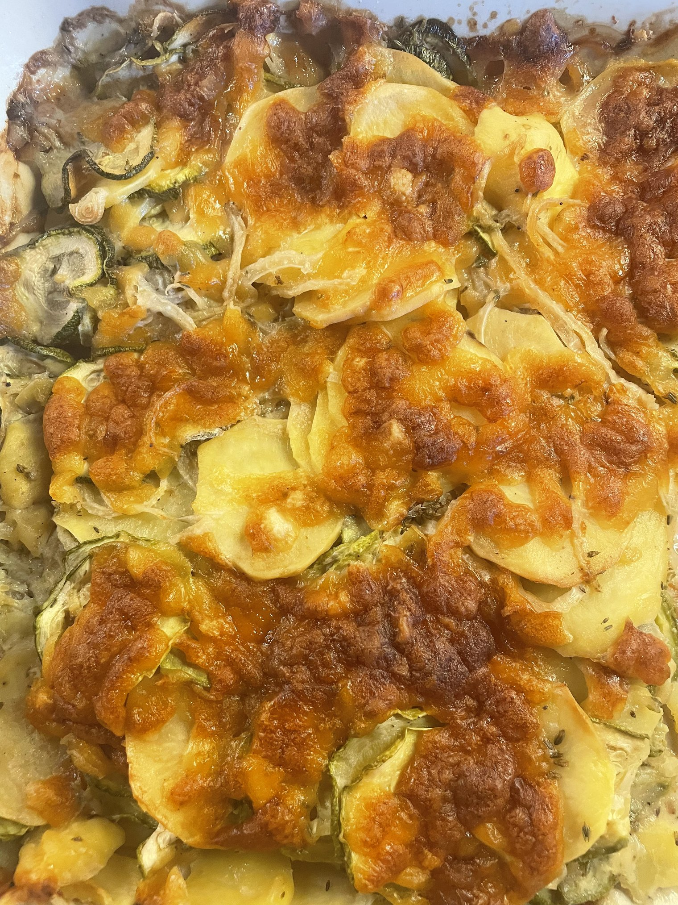

Gratén de patata y calabacín
Ingredientes
4×
- 600 g de patatas
- 1 calabacín
- 1 cebolla
- sal
- pimienta
- tomillo
- 200 ml de nata o leche
- 100 g de queso rallado

Preparación
Paso 1
Cortar en láminas finas 600 g de patatas, 1 calabacín y 1 cebolla.
Paso 2
Colocar en capas en una fuente engrasada, salpimentando con sal, pimienta y tomillo, y regar con 200 ml de nata o leche.
Paso 3
Cubrir con 100 g de queso rallado y hornear 50min a 190ºC, hasta que la patata esté tierna y el queso gratinado.
Resumen
600 g de patatas
1 calabacín
1 cebolla
Cortar
sal
pimienta
tomillo
200 ml de nata o leche
Colocar regar
100 g de queso rallado
Cubrir hornear 190ºC